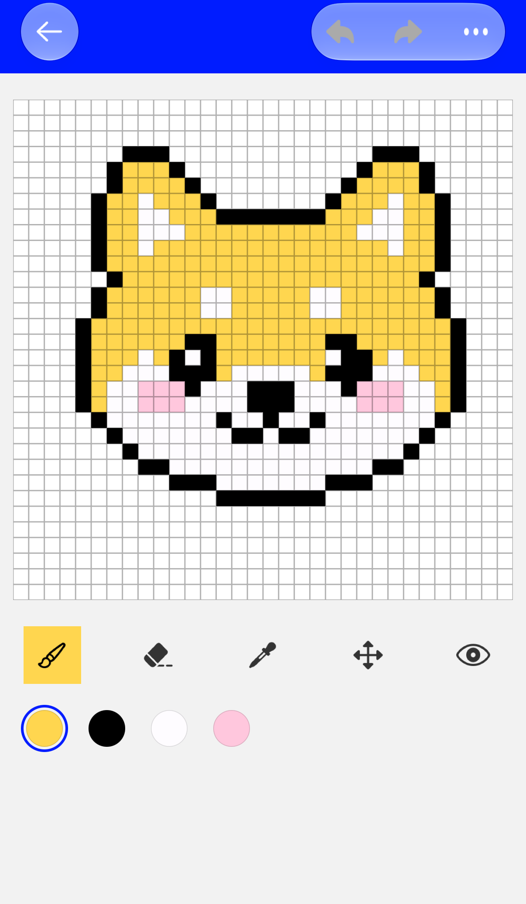
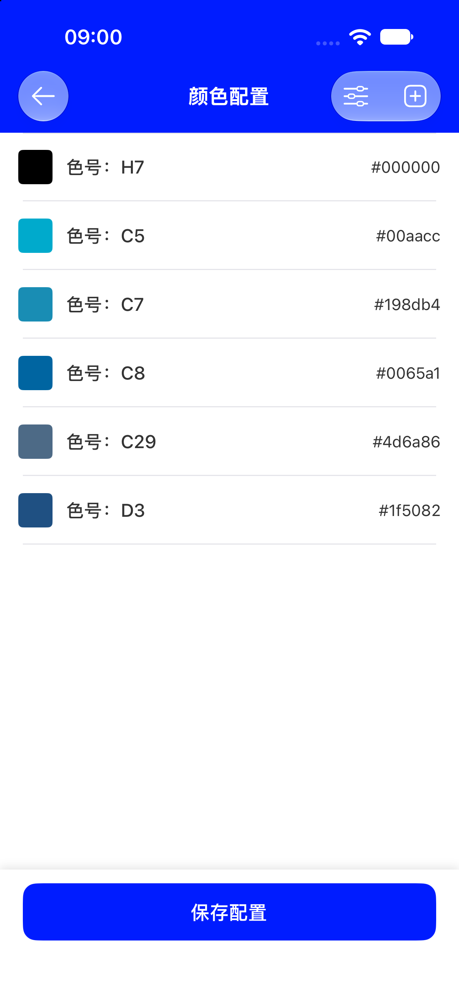
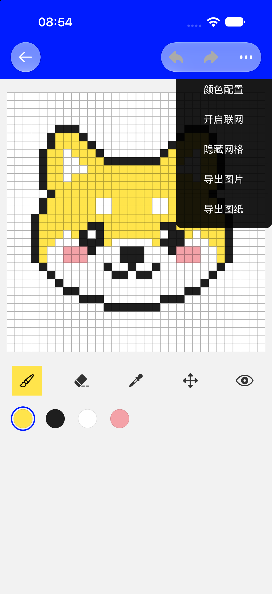

画笔 默认工具
单指点或拖动，格子立刻填上当前颜色。手指滑得快也会把中间经过的格子补齐，不会画出断线。
PIXELO · 使用教程
一支画笔、几块颜色，就能一格一格把图案拼出来。这里讲清楚工具栏每个按钮、颜色怎么调，以及网格的去留。

默认选中画笔、色板第一个颜色、网格显示。网格开关不会被记住，下次进入画布会重新打开。
从左到右点一下就切换，不需要长按或二级菜单。图标为示意，实际以 App 内显示为准。
单指点或拖动，格子立刻填上当前颜色。手指滑得快也会把中间经过的格子补齐，不会画出断线。
同样用单指点或拖，把经过的格子擦成透明（空白格），方便修轮廓、留白。
点画布上任意一格，吸取它的颜色并自动切回画笔，接着画同一种颜色。点到空白格会自动切成橡皮擦。
放大之后用单指拖动平移画布，去画没露出来的部分。画布移动会被限制在可视范围内，不会拖丢。
眼睛图标。一键缩回原始 1 倍并居中，重新看清整张画，网格也会跟着恢复——它不是一个弹窗预览。
工具栏下面那排圆点色块：点哪个就用哪个颜色，选中项带蓝色圆环。颜色不够用时，去「颜色配置」里加。
① 无论用哪个工具，双指捏合都能缩放画布（缩放时网格临时隐藏，松手恢复）；画布最小是 1 倍，不能缩到比原始尺寸更小，想复位就点「总览画布」。
② 落笔永远吸附到整数格，不会出现半格或自由笔迹，放大后点得更准。
在画布里点右上「⋯ → 颜色配置」，打开的就是创建画布时选颜色的那个页面：同样来自 221 个 MARD 色号，增删和排序方式完全一样。


「颜色配置」换的是调色板，不会把已经落在画布上的颜色批量替换，也不会重绘导入的图片。删掉某个正在用的色号，画布上原有的那些格子仍然保持原色。
右上角的「⋯」是画布页的功能总入口，一共 5 项，顺序固定。

网格会随缩放自动变疏或变密，保证放大后每格之间还看得清；它不会出现在导出的图片里。关掉网格后看图更干净，但下次进入画布又会默认打开（这个开关目前不会被记住）。
顶栏的撤销 / 重做以「从按下到抬手的一整笔」为单位；一旦落了新的一笔，之前的重做记录就清空了。落笔、撤销、移动画布等操作都会自动保存，不用手动存，也不必担心返回首页丢稿。
先确认工具栏最左边的画笔是黄色高亮状态——选成「移动画布」时单指只会平移，选「取色器」只会取色。再检查是不是选了和底色一样的颜色。格子很密时，双指放大后再点会更准。
这是设计好的：取到有颜色的格子会切回画笔，方便接着画；取到空白格会切成橡皮擦。想换回别的工具，手动点一下工具栏即可。
工具栏最右边的眼睛就是「总览画布」：一键回到 1 倍并居中。双指捏合也只能缩到 1 倍，不能更小。
网格默认显示，每次进入画布都会重置。需要无网格的成品图不用担心——导出图片本身就不含网格。
颜色配置只更换调色板，不会重绘已有像素。要改旧区域的颜色，选中新颜色用画笔重新涂一遍；整片同色区域用取色器配合放大镜更省力。
目前不能。颜色只能从内置的 221 个 MARD 色号里挑，色值只读，仅「色号名称」可以长按修改。
不会。创建时画板就已入库，之后落笔、橡皮、撤销重做、移动画布都会自动保存；返回首页会看到最新缩略图。
画笔落格 → 取色修细节 → 总览看全图。
下一步看导出图片教程，把作品存进相册或做成拼豆图纸。